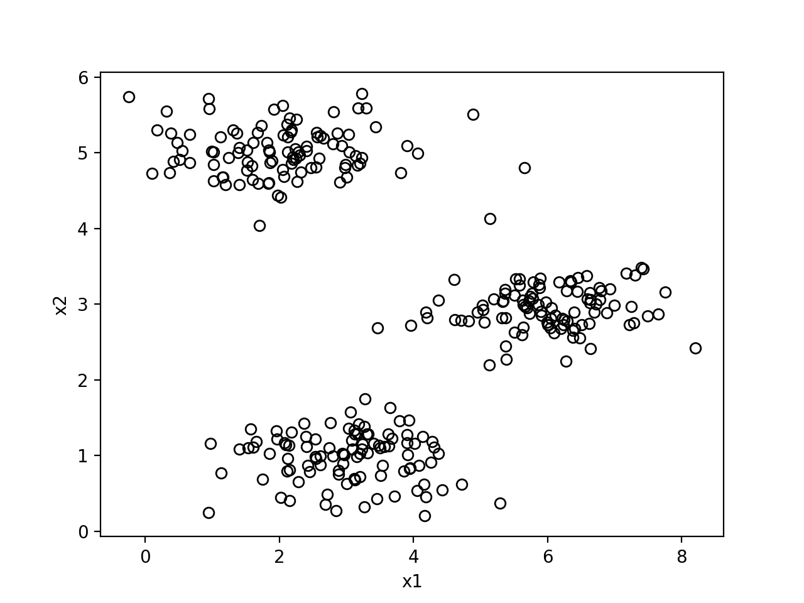
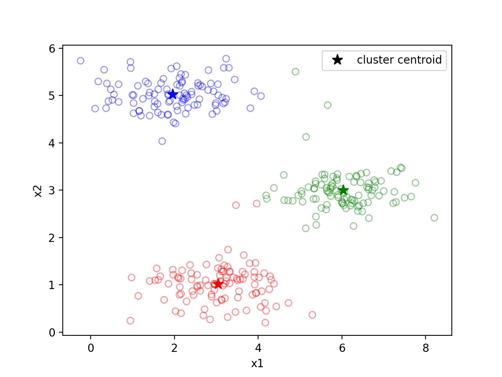

[吴恩达机器学习]11·K-means聚类
吴恩达机器学习系列课程：https://www.bilibili.com/video/BV164411b7dx
聚类问题
聚类问题属于无监督学习的范畴，与有监督学习不同，无监督学习的数据不再包含标注的标签。聚类问题就是在无标注的情况下将数据集分为若干类的问题。
\(\text{K-means}\) 算法
\(\textbf{K-means}\) 算法是解决聚类问题的一种算法，其基本思想非常简单：假设我们要将数据分为 \(K\) 类，首先我们随机 \(K\) 个聚类中心，然后反复执行以下步骤：
- 根据数据点到这 \(K\) 个聚类中心的距离进行分类（距离哪个中心小就分为哪一类）；
- 将聚类中心重置为它所代表的那一类的所有点的平均位置。
直到聚类中心不再改变，算法结束。
对于 \(\textbf{K-means}\) 算法，我们可以定义一个代价函数，为各数据点到它所属于的聚类中心的距离之平方和。很容易证明，1、2 两个步骤都是在减小这个代价，所以正确实现的 \(\textbf{K-means}\) 算法的代价应随着迭代次数增加而减小。
注意：
- 在实践中，我们可以任取 \(K\) 个数据点作为聚类中心；
- 如果更新聚类中心时，没有数据属于某一聚类中心，则可以将该聚类中心删去（这样分类数会减少）或者置于随机位置上（保持分类数不变）；
- 执行一次 \(\textbf{K-means}\) 的结果依赖于聚类中心的选取方式，因此有可能得到一个局部最优解。所以我们可以多次执行算法，取代价最小的结果为最终结果。
实现
平面点集分类
首先看看数据集的样子：

1 | |
结果如下：

图像压缩
图像是有若干像素组成的，每个像素存放 \(3\) 个字节的信息代表其 \(\text{RGB}\) 颜色，一张图片可能含有成百上千种颜色，如果我们只用 \(16\) 种颜色表示它，那么我们只需要在对应像素位置存放一个 \(4\) 位二进制数表示是第几种颜色，这样就把图像压缩到了原来的 \(\frac{1}{6}\) 大小。
现在我们用 \(\textbf{K-means}\) 算法去得到这 \(16\) 种颜色。
我们使用的图像含有 \(128\times128\) 个像素，可以处理为 \((128\times128,3)\) 的二维数组，每一行就是一个像素，包含 \(3\) 个值，即 \(\text{RGB}\). 这就是我们的输入数据。原图如下：

1 | |
得到的压缩结果如下：
[吴恩达机器学习]11·K-means聚类
https://xyfjason.github.io/blog-main/2021/01/25/吴恩达机器学习-11·K-means聚类/